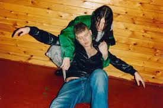

Біографія
Йонатан Леандоер Хастад, більш відомий як Yung Lean, народився 18 липня 1996 року в Стокгольмі, Швеція. Він став відомим у ранньому віці завдяки своїм експериментальним підходам до хіп-хопу та електронної музики. Його стиль часто називають "cloud rap", але Yung Lean також поєднує в своїх треках меланхолійні та психоделічні мотиви.
«Музика для мене – це спосіб втекти від реальності та знайти свій внутрішній світ». — Yung Lean2012-2023
Хестад познайомився з Yung Sherman і Yung Gud в місцевому парку Стокгольма. Трохи пізніше з'ясувалося, що їм подобається одна і та ж музика. Разом вони сформували колектив Hasch Boys, який складався з Lean'a, Sherman'a і Gud'a, а також інших людей, які пізніше стали частиною Gravity Boys і Shield Gang.
Учасники колективу (крім Lean'a, Sherman'a і Gud'a) почали втрачати інтерес до «Hasch Boys». Як результат цього, Yung Lean, Yung Sherman і Yung Gud формують Shemene Boys. До 2012 року Yung Gud і Yung Sherman починають займатися написанням музики, в той час як Lean активно пише тексти для пісень, записує їх і завантажує більшість з них в свій профіль на SoundCloud.
Yung Lean почав привертати увагу суспільства в 2013 році, коли його кліп на трек «Ginseng Strip 2002» став вірусним, набравши понад 6 мільйонів переглядів на YouTube. У цьому ж році він зробив свої перші офіційні релізи: Unknown Death 2002 і EP під назвою «Lavender», в якому знаходився вже відомий трек Ginseng Strip 2002 поряд з іншими треками, які Lean вирішив не включати в свій повноформатний альбом Unknown Death 2002.
- Трек «Ginseng Strip 2002» зайняв 44 місце в «Топ 50 пісень 2013» за версією сайту Consequence of Sound.
- Мікстейп Unknown Death 2002 був включений до «10 найбільш недооцінених дебютних реп-мікстейпів 2013 року» за версією Vibe.
У 2013, Yung Lean і Sad Boys, гастролювали по Європі. Пізніше, в цьому ж році, журнал Acclaim Magazine запросив Yung Lean'a в якості гостя в свій проект Q & A «smalltalk» для невеликого інтерв'ю.
Тури та Концерти
- 2013 — Європейський тур
- 2014 — White Marble Tour (Північна Америка та Європа)
- 2016 — Виступи в Києві
У 2016 році Yung Lean і Sad Boys виступали на концерті в Києві. У січні 2016 року Yung Lean випустив спільний сингл з шведським репером Thaiboy Digital — «How U Like Me Now».
Сам Джонатан заявив, що альбом вийде в лютому 2016 і буде випущений в пам'ять Баррону Махато. (25 січня в мережу були завантажені старі недороблені треки, які видали за новий альбом.)
8 березня Yung Lean випустив кліп на трек «Miami Ultras». 22 березня Yung Lean випускає кліп на пісню «Afghanistan».
Детальніше про Yung LeanДискографія
- Unknown Death 2002 (2013) — перший мікстейп, який здобув культовий статус серед фанатів андеграундного хіп-хопу.
- Unknown Memory (2014) — дебютний студійний альбом, який приніс Yung Leanу міжнародну популярність.
- Warlord (2016) — експериментальний альбом, який закріпив його місце в музичній індустрії.
- Starz (2020) — один з його найкращих релізів, відзначений критиками за поєднання емоційного тексту та електронних елементів.
Галерея
![Yung Lean - посилання]()

Нагороди
| Рік | Нагорода | |
|---|---|---|
| 2013 | Греммі Швеції | Найкращий новий артист |
| 2016 | Swedish Hip Hop Awards | Найкращий хіп-хоп альбом |